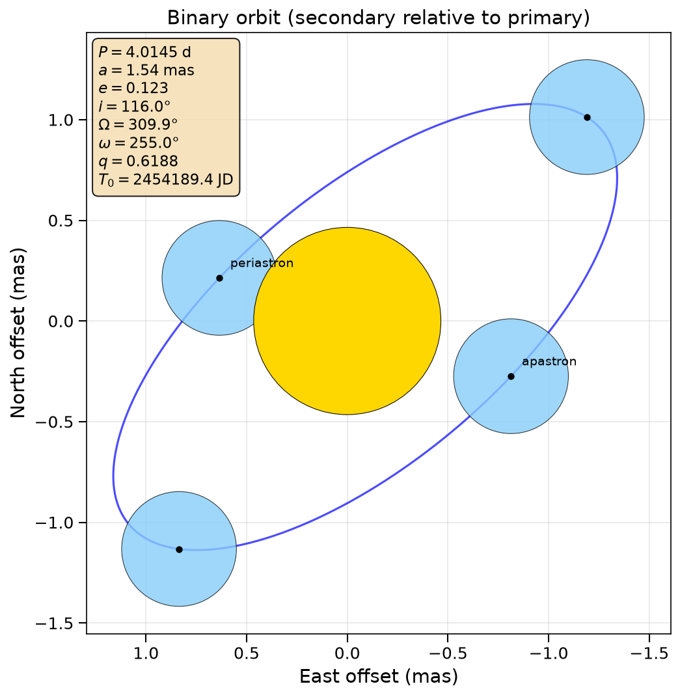
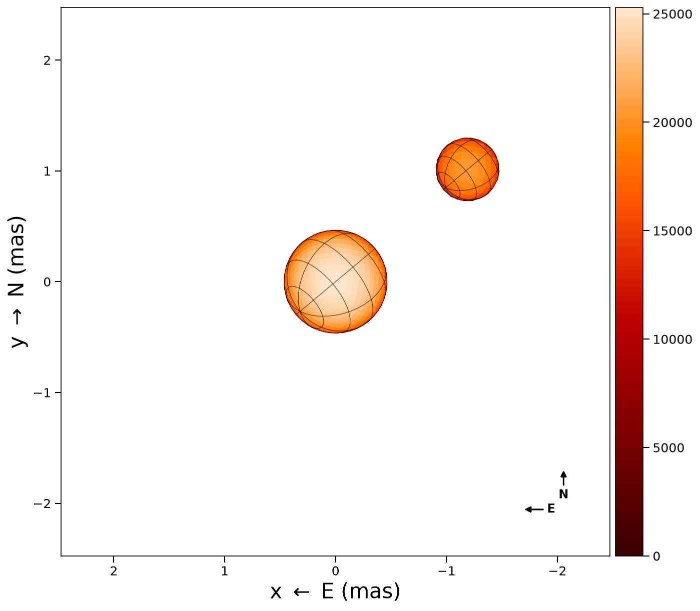
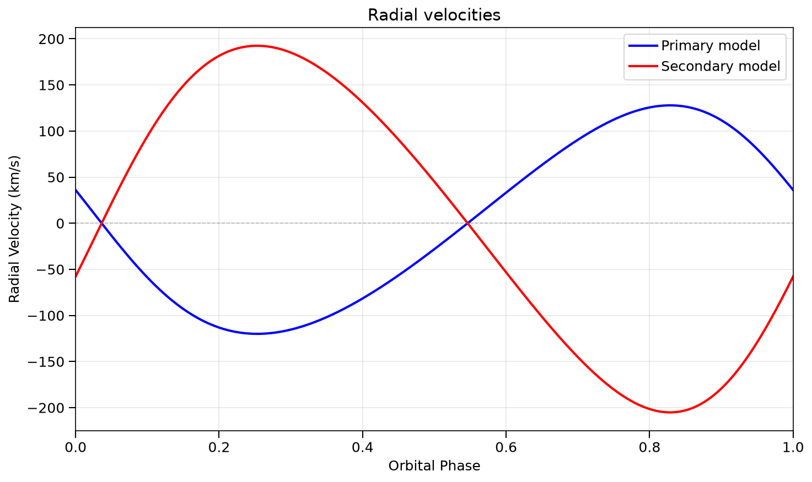
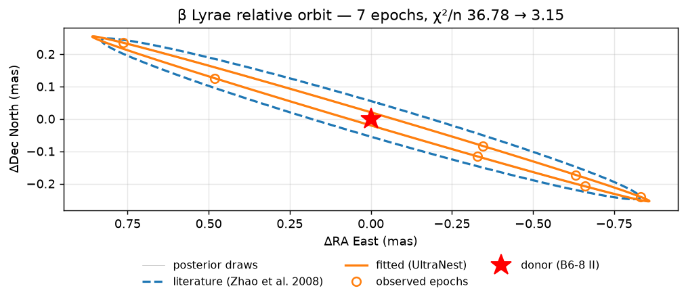
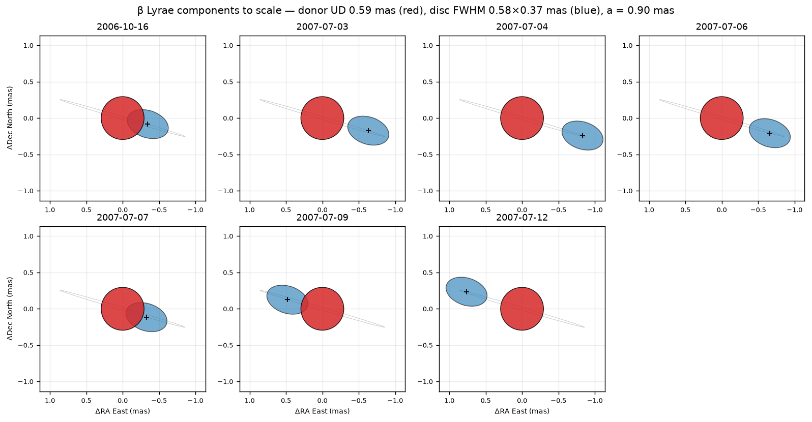

Binary Orbits
Binary systems with one or both components resolved: orbital elements, positions, radial velocities, plots, and orbit fits.
Orbital elements
A binary is a binaryparameters NamedTuple holding two starparameters NamedTuples and the orbital elements:
using ROTIR
# Spica-like binary (Aufdenberg+2015)
star1 = starparameters(
0.465, # rpole: polar radius (mas)
25300.0, # tpole: polar temperature (K)
0.0, # frac_escapevel
3, # ldtype: Hestroffer limb darkening
0.15, # ld1
0.0, # ld2 (unused for Hestroffer)
0.25, # beta: von Zeipel exponent (radiative)
0.0, # B_rot: differential rotation
64.0, # inclination (degrees)
129.938, # position_angle (degrees)
0.0, # rotation_offset (degrees)
4.0145, # rotation_period (days)
)
star2 = starparameters(
0.285, 20585.0, 0.0, 3, 0.15, 0.0, 0.25, 0.0, 64.0, 129.938, 0.0, 4.0145)
bparams = binaryparameters(
star1, star2,
77.0, # d: distance (pc)
116.0, # i: orbital inclination (degrees; >90 = retrograde)
309.938, # Ω: longitude of ascending node (degrees)
255.0, # ω: argument of periapsis (degrees, relative orbit)
4.0145, # P: orbital period (days)
1.54, # a: semi-major axis (mas)
0.123, # e: eccentricity
2454189.40, # T0: time of periastron (JD)
0.6188, # q: mass ratio M₂/M₁
[1.0, 1.0], # fillout_factor (unused for spheres)
0.0, # dP: period derivative (days/day)
0.0, # dω: apsidal motion (degrees/day)
)Both are plain NamedTuples, so they can also be written directly:
star1 = (rpole=0.465, tpole=25300.0, frac_escapevel=0.0, ldtype=3,
ld1=0.15, ld2=0.0, beta=0.25, B_rot=0.0,
inclination=64.0, position_angle=129.938,
rotation_offset=0.0, rotation_period=4.0145)and modified with merge:
star1_tilted = merge(star1, (inclination=75.0, position_angle=140.0))
bparams_circ = merge(bparams, (e=0.0,))Conventions describes each parameter and the coordinate frame.
Orbital positions
# Secondary relative to primary: returns (0, 0, 0, x, y, z)
x1, y1, z1, x2, y2, z2 = binary_orbit_rel(bparams, tepoch_jd)
# Both components relative to the centre of mass
x1, y1, z1, x2, y2, z2 = binary_orbit_abs(bparams, tepoch_jd)
# Projected position, separation ρ and angle θ (radians) at several epochs
x, y, ρ, θ = binary_proj_plane(bparams, tepochs_jd)
# Separation in units of a
D = compute_separation(bparams, tepoch_jd)Times are JD. The output frame is x = North, y = East, z = along the line of sight (positive receding). orbit_to_rotir_offset converts to ROTIR's (West, North) frame.
Orbit plot

The secondary's orbit (blue) relative to the primary (gold), on the sky. East is left.
Sky-plane image
plot2d_binary draws both components at one epoch:
# create_star takes reconstruction-style NamedTuples (surface_type, ...)
star1_params = (surface_type=0, radius=star1.rpole, tpole=star1.tpole,
ldtype=star1.ldtype, ld1=star1.ld1, ld2=star1.ld2,
inclination=star1.inclination, position_angle=star1.position_angle,
rotation_period=star1.rotation_period)
star2_params = (surface_type=0, radius=star2.rpole, tpole=star2.tpole,
ldtype=star2.ldtype, ld1=star2.ld1, ld2=star2.ld2,
inclination=star2.inclination, position_angle=star2.position_angle,
rotation_period=star2.rotation_period)
tessels1 = tessellation_healpix(3)
tessels2 = tessellation_healpix(2)
star1_geom = create_star(tessels1, star1_params, 0.0)
star2_geom = create_star(tessels2, star2_params, 0.0)
tmap1 = parametric_temperature_map(star1_params, star1_geom)
tmap2 = parametric_temperature_map(star2_params, star2_geom)
fig, ax = plot2d_binary(tmap1, tmap2, star1_geom, star2_geom, bparams, tepoch_jd;
intensity=true, graticules=true, compass=true,
inclination1=64.0, position_angle1=129.938,
inclination2=64.0, position_angle2=129.938)The secondary is placed at its orbital offset, and the farther star is drawn behind the nearer one.

Radial velocities
binary_RV computes both components' radial velocities from the semi-amplitudes K₁, K₂ and the systemic velocity γ (km/s). Positive is receding.
rv1, rv2 = binary_RV(bparams, tepochs_jd; K1=123.9, K2=198.8, γ=0.0)
fig, ax = plot_rv(bparams; K1=123.9, K2=198.8, γ=0.0,
rv_data1=data_rv1, rv_data2=data_rv2) # data optionaltepochs_jd is a Float64 or a Vector{Float64}.

Interferometric forward model
The binary complex visibility combines both components, the secondary shifted by the orbital separation:
offset_x, offset_y = orbit_to_rotir_offset(bparams, tepoch_jd) # (West, North), mas
phase = binary_phase_shift(data.uv, offset_x, offset_y)
v2, t3amp, t3phi = binary_observables(tmap1, star1, tmap2, star2, data, phase)
chi2 = binary_chi2_f(tmap1, star1, tmap2, star2, data, phase)Mutual occultation is off by default; occultation = true (or :exact, :soft) turns it on in binary_cvis, binary_observables and the χ² functions.
Two stars in one frame
The phase shift above places the secondary but does not orient either component in 3-D. Tidally distorted (Roche) components and mutual irradiation need both in one frame, with the tidal bulge pointing at the companion. create_binary_geometry builds that frame from the orbit:
star1, star2 = create_binary_geometry(tes1, params1, tes2, params2, bparams, tepoch_jd;
volume_conserving=true)
tmap1 = parametric_temperature_map(params1, star1)
tmap2 = parametric_temperature_map(params2, star2; secondary=true)
heated1, heated2 = handle_reflection(star1, tmap1, star2, tmap2; albedo1=0.6, albedo2=0.6)Calling create_star twice is not equivalent: its t sets both the Roche shape (through D(t)) and the spin phase, with nothing aligning the bulge to the line of centres. Real epoch times rotate the star without its bulge; t = 0 freezes both.
check_binary_overlap reports epochs at which the two disks overlap on the sky.
Fitting orbital elements to interferometric data
The elements are fitted directly to the OIFITS data, without intermediate per-epoch astrometry:
(orbital elements, component sizes) → separation at each observation
→ component visibilities → combined complex visibility → observables → one χ²The likelihood uses the OIFITS errors on V², T3amp and T3φ over the whole dataset.
Example scripts:
| Script | System | Sampler |
|---|---|---|
demos/spica_orbit_fit_ultranest.jl | Spica: two uniform discs, eccentric orbit | UltraNest |
demos/betlyr/betlyr_orbit_fit_ultranest.jl | β Lyrae: donor + accretion disc, circular orbit | UltraNest |
demos/betlyr/betlyr_orbit_fit_pigeons.jl | β Lyrae, same model | Pigeons |
demos/betlyr/betlyr_orbit_figure.jl | β Lyrae: redraws the orbit from a stored fit | none |
The β Lyr model is in demos/betlyr/betlyr_model.jl, included by both drivers. The result is in Worked example: β Lyrae.
Sampling
These posteriors are multimodal. A scan over Spica's (ω, dω) alone runs from χ²/n = 73 to 232, with a degeneracy valley whose preferred sign of dω flips with ω. A local optimiser returns the basin it starts in.
Analytic components for the orbit
Fit the orbit with analytic components (uniform discs, elliptical Gaussians), then pass it to a tessellated model. A tessellated χ² costs about 0.2–2 s per likelihood, the analytic one 0.2–0.3 ms; the surface detail changes the separation by a few percent.
const MAS_PER_RAD = 206264806.2
ud_vis(diam, ρ) = (t = diam / MAS_PER_RAD * pi .* ρ .+ 1e-10; 2 .* besselj1.(t) ./ t)OITOOLS' model API (dict_to_model, model_to_vis, re-exported by ROTIR) provides the standard component visibilities.
Per-observation times
Evaluate the orbit at each observation's MJD, not one mean time per night. Spica's 2015 nights span about 4.7 h, during which the secondary moves 0.24–0.52 mas and the position angle changes by 8–38°, ten times the astrometric precision.
- With
Float32data,uv_mjdquantises MJD ≈ 57131 to about 5.6 minutes. Take per-uv times from theFloat64v2_mjd/t3_mjdthroughindx_v2/indx_t3_1,2,3. - Many uv points share a time (one exposure, many baselines). Solving Kepler's equation once per distinct time and broadcasting back takes 17× fewer solves for Spica, 26× for β Lyrae.
The (Ω, ω) degeneracy
Under (Ω, ω) → (Ω+180°, ω+180°) every Thiele–Innes constant is unchanged, so the separation and every interferometric observable are invariant. Sampling the full range gives a bimodal posterior; restrict Ω to [0°, 180°).
- The fold applies to the pair. Moving Ω alone mirrors the position vector, which changes the sign of the closure phases; for Spica χ²ₜ₃ₚ/n went from 291 to 811.
- For a circular orbit ω is degenerate with T₀, and the degeneracy becomes
(Ω, T₀) → (Ω+180°, T₀ + P/2). Fix ω, restrict Ω, and let T₀ span a full period.
Samplers
UltraNest (ultranest through PythonCall) returns log Z and needs no tuning. Vectorise it, as OITOOLS' fit_model_ultranest does, so the Julia–Python crossing happens once per batch:
prior_v(U::AbstractMatrix{<:Real}) =
Py(reduce(vcat, (u -> prior_1(u)').(eachrow(U)))).to_numpy()
loglike_v(X::AbstractMatrix{<:Real}) = Py(loglike_1.(eachrow(X))).to_numpy()
sampler = ultranest.ReactiveNestedSampler(pylist(names), loglike_v;
transform = prior_v, vectorized = true)::AbstractMatrix{<:Real}makes PythonCall convert the numpy batch to a Julia matrix. Without it the argument stays aPyandcollectraisesMethodError: no method matching (Array{Float64})(::Py)..to_numpy()is required on the return values: UltraNest calls numpy methods (.transpose) on them, which ajuliacall.VectorValuelacks.namesmust be apylist: UltraNest evaluatesnames + [...], which aVectorValuedoes not support.
A multithreaded session works: PythonCall's finalizer queues the pointer, and only a thread holding the GIL drains the queue (PyGILState_Check, PythonCall/src/GC/GC.jl), so Py objects may be finalized on any thread. A full UltraNest run completes under julia -t 8.
Python may only be called from a thread holding the GIL. Calling Python inside a Threads.@threads body without PythonCall.GIL.@lock segfaults, so a likelihood that calls Python must run single-threaded; a pure-Julia likelihood may run threaded.
Pigeons (Pigeons.jl, pure Julia) uses several cores, returns log Z by stepping stone, and reports round trips between reference and target. On the β Lyr fit, 8 chains × 32 scans:
| wall | |
|---|---|
multithreaded = true | 35.8 s |
multithreaded = false | 139.8 s |
The speed-up is bounded by n_chains (N_CHAINS in the demo), not by the core count.
Sample in an unconstrained space, θ = lo + (hi−lo)·σ(z), with a plain wide Gaussian reference, and include the log-Jacobian so that a uniform box prior stays uniform (z_to_theta, log_jacobian, theta_to_z in betlyr_model.jl).
PythonCall defers decrefs until a thread holds the GIL, so Py objects (from PythonPlot, for example) may exist during a Pigeons run.
Check Pigeons.n_round_trips(pt) before using an interval. Zero round trips means the chain never travelled between reference and target.
Monitoring a Pigeons run
Pigeons has no per-scan callback. It runs in doubling rounds (round r is 2^r scans) and adapts between rounds. Running one round at a time gives the same log Z, round-trip count and traces as a single n_rounds = N call:
pt = pigeons(; kw..., n_rounds = 1, show_report = false)
report_round!(pt, 1)
for r in 2:N_ROUNDS
global pt = pigeons(Pigeons.increment_n_rounds!(pt, 1))
report_round!(pt, r)
endReport a summary of the round's trace (a median over Pigeons.get_sample(pt)), not the latest state. betlyr_orbit_fit_pigeons.jl does this with VERBOSE=1.
Gradients
The orbit forward model is differentiable, Kepler's equation included. kepler_E has an analytic rrule/frule from the implicit function theorem:
M = E − e·sin E ⇒ ∂E/∂M = 1/(1 − e·cos E), ∂E/∂e = sin E/(1 − e·cos E)It is exact at the converged root and costs two trig calls. 1 − e·cos E = r/a > 0, so it is never singular on an ellipse.
A differentiable likelihood also needs:
- No array mutation: Zygote rejects
setindex!. Use broadcasts or comprehensions (z_to_theta_adin the β Lyr demo). - Vectorisation over epochs: use
orbit_to_rotir_offset(bparams, tepochs::AbstractVector). Looping the scalar method costs 512× the primal in reverse mode for 55 epochs; the vectorised method is also about 6× faster in the primal. - Type stability: OITOOLS declares
OIdata's data fields asVector{T} where T<:AbstractFloat, sod.v2is not inferable. Copy what the likelihood needs into concreteVector{Float64}constants at load time.JET.@report_opt chi2_total(θ)should report no runtime dispatch.
On the β Lyr fit (10 free parameters, χ² = 0.42 ms), all agreeing to 1e-12 with central_fdm(5, 1):
| method | cost | note |
|---|---|---|
| ForwardDiff | 8.1× primal | fastest at this dimension |
| Zygote (reverse) | 10.9× | faster than forward mode above ~25 parameters |
| central differences | 20× (2n evals) | scales with n |
central_fdm(5, 1) | 40× (4n evals) | scales with n |
central_fdm's adaptive step can push dP (~6e-7 d/d) to O(1e-2), which triggers the quadratic-ephemeris warning. Pass a per-parameter max_range. T0 needs a large step: at ~2.45e6 JD a 1e-6 step leaves about 4 significant digits.
Slice sampling costs about 765 likelihood evaluations per chain-scan at this dimension (3 passes × 10 coordinates × ~25 steps). Compare n_round_trips with EXPLORER=slice and EXPLORER=mala to decide whether a gradient explorer helps.
With occultation, use the :soft method of occultation_weights: its sigmoid is C∞. The :exact Sutherland–Hodgman area is continuous and piecewise smooth. In a flat-disc model the near/far switch (which star is in front) is discontinuous, at conjunction, which in an eclipsing system is where the most informative data are.
Worked example: β Lyrae
demos/betlyr/betlyr_orbit_fit_ultranest.jl on the 2006–2007 MIRC nights (DATASET=old, the default), for comparison with the published elements. Model: uniform disc for the B6–8 II donor, elliptical Gaussian for the accretion disc, circular orbit; 10 free parameters, 1970 data points, 7 epochs.

The grey posterior draws (26268 samples) lie under the fitted curve.
a is 0.90 mas and the donor 0.59 mas across:

The components overlap on the sky at several epochs. The demo's model_cvis sums them with a phase shift and no occultation term, so it double-counts the overlap there. By half-FWHM the overlap affects 3 of 7 epochs (2006-10-16, 2007-07-07, 2007-07-09) and 45 % of the orbit, with a minimum projected separation of 0.02 mas. Using the Gaussian's 2σ extent (0.49 mas), only 2007-07-04 is free of overlap. The disc is in front in October and behind in July, so the error changes sign between epochs.
Occulting a Gaussian is undefined; the disc needs a physical model first. Options: an opaque donor and an optically thin disc, or an opaque elliptical disc with occultation_weights. Both lose the closed-form visibility and require an image-plane model with NFFT.
Six of the seven epochs fall in nine days in July 2007.
| literature | fitted | posterior sd | |
|---|---|---|---|
a_mas | 0.865 | 0.8958 | 0.00065 |
incl_deg | 93.50 | 91.244 | 0.046 |
Omega_deg | 73.70 | 73.529 | 0.040 |
T0_JD | 2454283.043 | 2454283.0555 | 0.0017 |
P_d | 12.9414 | 12.9616 | 0.0017 |
ud_donor_mas | 0.570 | 0.5898 | 0.0032 |
disc_fwhm_mas | 0.900 | 0.5825 | 0.0022 |
disc_ratio | 0.6058 | 0.6423 | 0.0051 |
disc_pa_deg | (73.70) | 108.353 | 0.224 |
f_disc | 0.8065 | 0.8179 | 0.0031 |
Reduced χ² by observable:
| literature | fitted | |
|---|---|---|
| V² (858) | 9.46 | 1.47 |
| T3amp (556) | 7.85 | 1.57 |
| T3φ (556) | 107.85 | 7.33 |
| total (1970) | 36.78 | 3.15 |
- χ²ₜ₃ₚ/n falls by a factor 15. The closure phases constrain the asymmetry of the disc-plus-donor pair.
a,i,ΩandT0are within a few percent of the published values (Ωwithin 0.17°). The χ² improvement comes from the disc parameters.disc_pa_deghas no published value: 73.70 ismod(253.7°, 180°), the starting value inbetlyr_params.jl. Inellgauss_vis,ratioscales the rotatedupfrequency coordinate, so the source is narrower alongpa:disc_pa_degis the minor axis, the major axis is atpa + 90°, anddisc_fwhm_masis the major-axis FWHM.φruns from +RA toward +Dec, so the astronomical PA (North through East) is90° − φ. The fitted major axis is at PA 71.65°, 1.9° from the line of nodes (73.53°), as expected for a coplanar disc.disc_fwhm_masgoes from 0.90 to 0.58. The elliptical Gaussian is the model's only freedom for asymmetric structure.- The sd of
P_dis the prior width: the data, spanning 269 d, carry almost no period information (seePMAXinbetlyr_model.jl). The same holds for any parameter whose sd is close to its prior half-width.
Refitting the same ten parameters on subsets of the epochs moves them by tens of posterior sd. Dropping the three smallest-separation epochs shifts T0 by −60σ and disc_fwhm by +45σ; dropping the three largest shifts a by +60σ and Ω by −33σ. With 4 of 7 epochs the statistical error should grow only by ~√(7/4).
The sds are the curvature of the likelihood under this model. The likely cause is the missing occultation term: the components overlap at 3 of 7 epochs by half-FWHM and at 6 of 7 by the 2σ extent. Use the elements as a consistency check against Zhao et al. (2008), not as measurements with these error bars.
To redraw the figure and tables from the stored posterior without sampling:
julia --project=demos demos/betlyr/betlyr_orbit_figure.jlFitting interferometry together with radial velocities
- RVs break the (Ω, ω) degeneracy, so Ω may span
[0°, 360°). - K₁ and K₂ give
a·sin iandq; with the angularafrom interferometry they give dynamical masses and an orbital parallax.
demos/spica_orbit_fit_ultranest.jl with USERV=1 adds K₁, K₂ and γ to the free parameters and chi2_rv to the χ². The RV model is binary_RV, which includes apsidal motion through omega_at.
USERV=1 LIVE=400 julia --project=demos demos/spica_orbit_fit_ultranest.jlAn RV depends on ω alone, so (Ω,ω) → (Ω±180°, ω±180°) inverts the RV curve. For Spica at the literature starting point, χ²_RV is 8.1 per point on the correct branch and 586 on the mirror.
RV data
| System | RVs in the repository |
|---|---|
| Spica | demos/data/all_rv_1_ORIG.txt, all_rv_2_ORIG.txt: 33 + 33 points |
| β Lyrae | none |
The Spica RVs:
span 48 days in 2000, about 7 years and 639 orbits before the interferometry, so a joint fit must include
dω(ordPfor systems like β Lyr);have a placeholder error column (every point 1.00 km/s), which would let the RV χ² outweigh the 6871 interferometric points;
have separation-dependent residuals, from line blending in an SB2 with
v sin i= 161 km/s:|V₂−V₁| (km/s) mean |residual| 0–50 36.7 100–200 21.8 300–600 7.2
The demo therefore uses σ(Δ) = 7 + 30·exp(−|Δ|/100) km/s, which down-weights the blended points. Removing them instead lowers the rms to 5.2 km/s but biases K₁ and K₂ by about 7% and leaves ω unconstrained. Errors below ~5 km/s require spectral disentangling of the archival spectra (Tkachenko et al. 2016).